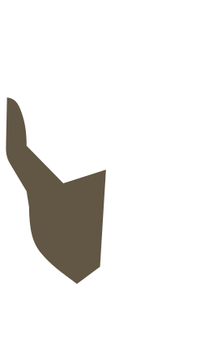
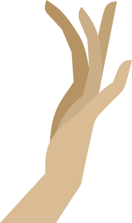
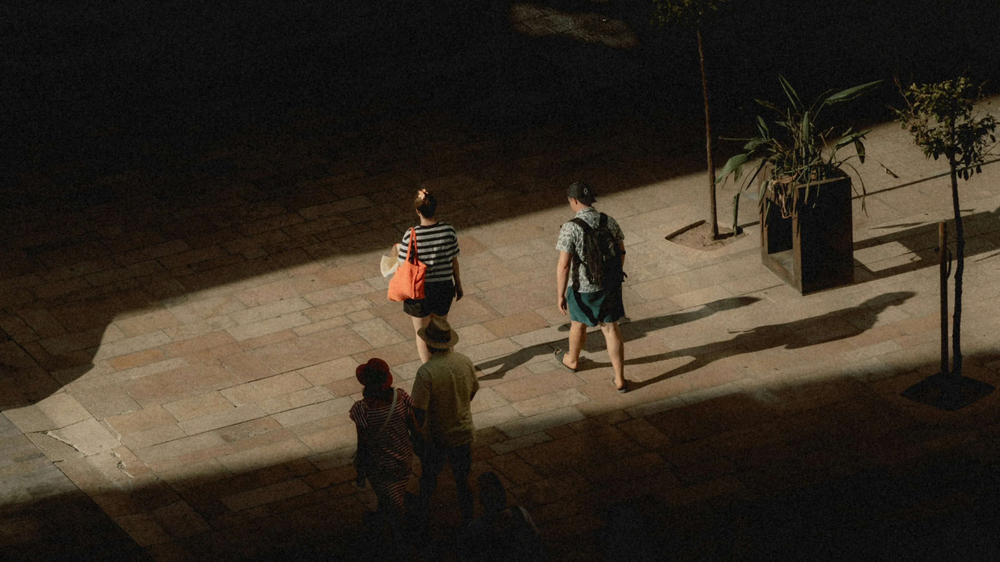
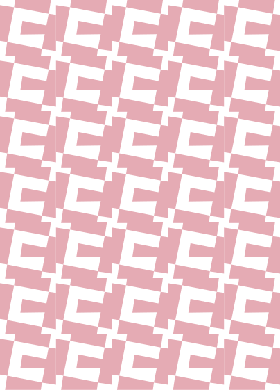

From assembling touchpoints,
- UX Research
- Service Design
- Systems Design

To crafting stories, experiences.
- UX Strategy
- Experience Design
Selected Works
2024 - 2026

Hi, I’m Carol,
I’m a Service and UX Designer who builds cohesive experiences that users navigate intuitively across touchpoints.
Grounded in user research and systems thinking, I treat problems as part of a larger ecosystem and design at multiple scales and in context, rather than in silos. Currently pursuing Masters in Design from IIT Delhi.
Learn More >